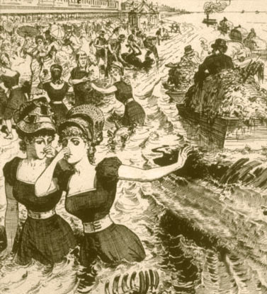

Eliminar de tu vida,
todos los rastros de tu ex
Es muy obvio, pero es tan difícil de hacer: hay que deshacerse de cualquier cosa que te recuerda a tu ex. Fotos, cartas, regalos, ropa que compraste con él o ella, la "almohada especial" que te recuerda a él o ella, etc.
Sea lo que sea, deshazte de ello. Tíralo a la basura, dalo a la caridad, quémalo... todo lo que tienes que hacer es deshacerse de todo. Todo rastro del ex que esté por ahí solo sirve para torturarte y prolongar tu recuperación.
Si tienes cosas de tu ex que tienes que devolver, empacalas y pídele a un amigo que se lo lleve así no tienes que ver al ex. Es muy importante que no lo entregues tu mismo y no permitas que el ex lo recoja personalmente. No querrás ningún contacto con él; menos aún cuando esto implica devolver cosas. Sólo llevará a situaciones horrendas y más penas y dolores de cabeza para ti.
(Y sé una buena persona: Si tienes cosas de tu ex que sabes ella o él quiere de vuelta, no lo guardes o tires a la basura sólo por despecho, no importa lo mal que te sientas)

Me gusta guardar recuerdos, así que tirar algunas de las cosas que yo había relacionado con "nosotros" simplemente no era una opción.
En su lugar, puse todo en una caja.
Entonces, sabiendo que no había manera de que fuera lo suficientemente fuerte como para resistirme a mirar, se lo di a una amiga para que lo guarde, con las instrucciones de no dármela hasta que esté 100%, completa y totalmente recuperada... no importa cuánto se lo ruegue.
Archivos informáticos son otro gran problema. Tenía tantas fotos, cartas, correos, videos y grabaciones de mi ex y yo. El disco duro de mi ordenador estaba esencialmente dedicado enteramente a "nosotros".
Por más difícil que fue para mí, puse todo lo relacionado con nosotros en un USB y se lo di a un amigo para que lo guarde hasta mi recuperación.
Otra idea que he visto es poner todo en una carpeta cifrada en tu ordenador, y un amigo lo bloquea con una contraseña que no sabes.
De cualquier manera, después de haber guardado todos los archivos en un lugar seguro donde no se puede acceder a ellos, bórralo todo de tu computadora.
Asegúrate de utilizar programas como Eraser, CC Cleaner o FileShredder... de lo contrario, los archivos seguirán estando en tu equipo y serás capaz de recuperarlos, confía en mí, que en algún momento, la tentación será abrumadora.